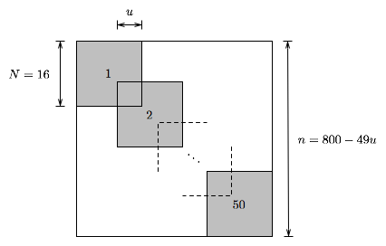

Benchmarks
To assess the performance of our preliminary implementation of SMCP, we have conducted a series of numerical experiments.
SDP solvers
The following interior-point solvers were used in our experiments:
Method M1 (SMCP 0.3a, feasible start solver with kktsolver=’chol’)
Method M1c (SMCP 0.3a, feasible start solver with kktsolver=’chol’ and solvers.options[‘cholmod’]=True)
Method M2 (SMCP 0.3a, feasible start solver with kktsolver=’qr’)
CSDP 6.0.1
DSDP 5.8
SDPA 7.3.1
SDPA-C 6.2.1 (binary dist.)
SDPT3 4.0b (64-bit Matlab)
SeDuMi 1.2 (64-bit Matlab)
Error measures
We report DIMACS error measures when available. The six error measures are defined as:
Here \(\|C\|_{\max} = \max_{i,j} |C_{ij}|\), and \(C\bullet X = \mathbf{tr}(C^TX)\).
Note that \(\epsilon_2(X,y,S)=0\) and \(\epsilon_4(X,y,S)=0\) since all iterates \((X,y,S)\) satisfy \(X \in \mathbf{S}_{V,c++}^n\) and \(S \in \mathbf{S}_{V,++}^n\).
Experimental setup
The following experiments were conducted on a desktop computer with an Intel Core 2 Quad Q6600 CPU (2.4 GHz), 4 GB of RAM, and running Ubuntu 9.10 (64 bit).
The problem instances used in the experiments are available for download here and the SDPLIB problems are available here.
We use the least-norm solution to the set of equations \(A_i \bullet X, i=1,\ldots,m,\) as starting point when it is strictly feasible, and otherwise we solve the phase I problem
Here \(\epsilon\) is a small constant, and the constraint \(\mathbf{tr}(X) \leq M\) is added to bound the feasible set.
SDPs with band structure
We consider a family of SDP instances where the data matrices \(C,A_1,\ldots,A_m\) are of order \(n\) and banded with a common bandwidth \(2w+1\).
Experiment 1
\(m=100\) constraints, bandwidth \(11\) (\(w=5\)), and variable order \(n\)
Results
| Show: |
Experiment 2
order \(n = 500\), bandwidth \(7\) (\(w=3\)), and variable number of constraints \(m\)
Results
| Show: |
The problem band_n500_m800_w3 required a phase I (M1 311.5 sec.; M2 47.8 sec.).
Experiment 3
order \(n = 200\), \(m=100\) constraints, and variable bandwidth \(2w+1\)
Results
| Show: |
Two problems required a phase I: band_n200_m100_w0 (M1 1.12 sec.; M2 0.53 sec.) and band_n200_m100_w1 (M1 3.18 sec.; M2 1.45 sec.).
Matrix norm minimization
We consider the matrix norm minimization problem
where \(F(x) = x_1 F_1 + \cdots + x_r F_r\) and \(G,F_i \in \mathbf{R}^{p \times q}\) are the problem data. The problem can be formulated as an SDP:
This SDP has dimensions \(m=r+1\) and \(n = p + q\). We generate \(G\) as a dense \(p\times q\) matrix, and the matrices \(F_i\) are generated such that the number of nonzero entries in each matrix is given by \(\max (1,dpq)\) where the parameter \(d \in [0,1]\) determines sparsity. The locations of nonzero entries in \(F_i\) are random. Thus, the problem family is parameterized by the tuple \((p,q,r,d)\).
Experiment 4
variable number of rows \(p\), \(q=10\) columns, \(r=100\) variables, and density \(d=1\)
Results
| Show: |
Experiment 5
\(p=400\) rows, \(q=10\) columns, \(r=200\) variables, and variable density
Results
| Show: |
Experiment 6:
\(p=400\) rows, \(q=10\) columns, variable number of variables \(r\), and density \(d=1\)
Results
| Show: |
Experiment 7:
\(p + q=1000\), \(r=10\) variables, and density \(d = 1\)
Results
| Show: |
Overlapping cliqes
We consider a family of SDPs which have an aggregate sparsity patterns \(V\) with \(l\) cliques of order \(N\). The cliques are given by
where \(u\) (\(0 \leq u \leq N-1\)) is the overlap between neighboring cliques. The sparsity pattern is illustrated below:

Note that \(u=0\) corresponds to a block diagonal sparsity pattern and \(u=N-1\) corresponds to a band pattern.
Experiment 8
\(m = 100\) constraints, clique size \(N=16\), and variable overlap \(u\)
Results
| Show: |
SDPLIB problems
The following experiment is based on problem instances from SDPLIB.
Experiment 9
SDPLIB problems with \(n \geq 500\)
Results
| Show: |
Three problems required a phase I: thetaG11 (M1 227.2 sec.; M1c 184.4 sec.), thetaG51 (M1 64.8 sec.: M1c 58.0 sec.), and truss8 (M1 17.9 sec.; M1c 17.9 sec.).
Nonchordal sparsity patterns
The following problems are based on sparsity patterns from the University of Florida Sparse Matrix Collection (UFSMC). We use as problem identifier the name rsX where X is the ID number of a sparsity pattern from UFSMC. Each problem instance has \(m\) constraints and the number of nonzeros in the lower triangle of \(A_i\) is \(\max\{1,\mathrm{round}(0.005 |V|)\}\) where \(|V|\) is the number of nonzeros in the lower triangle of the aggregate sparsity pattern \(V\), and \(C\) has \(|V|\) nonzeros.
Experiment 10
Results
| Show: |